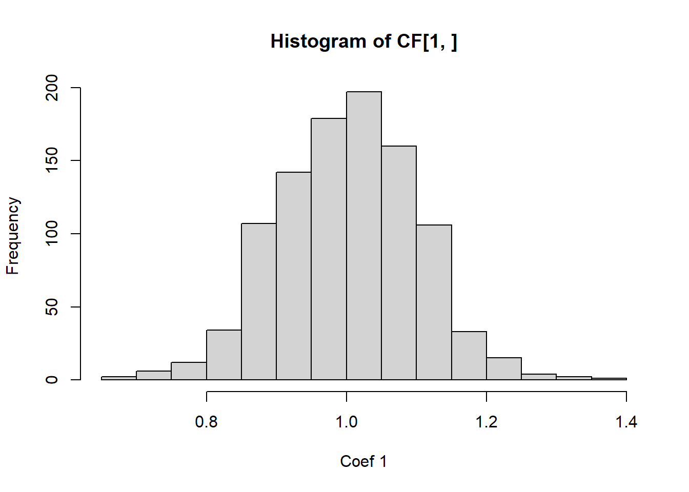
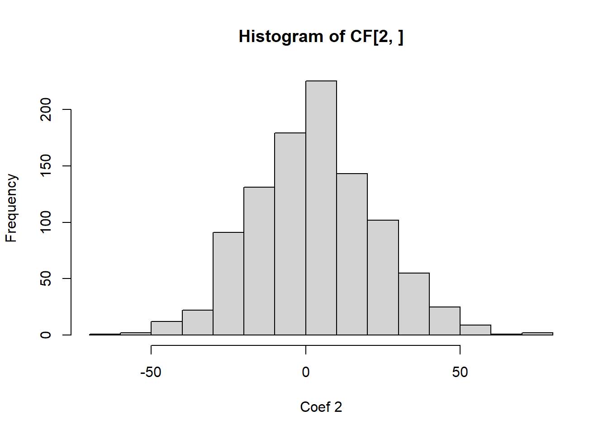
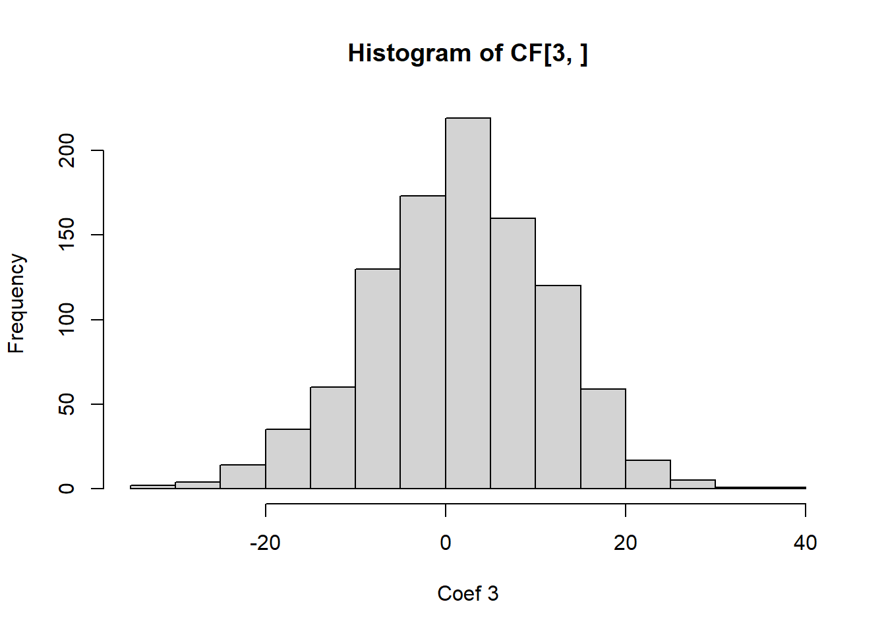
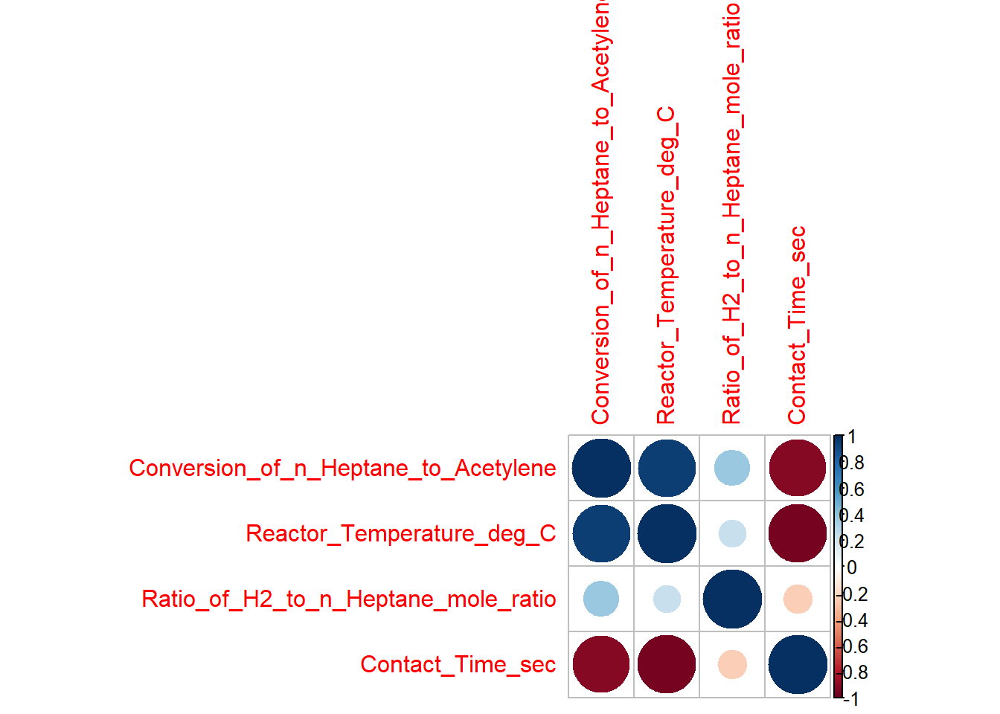
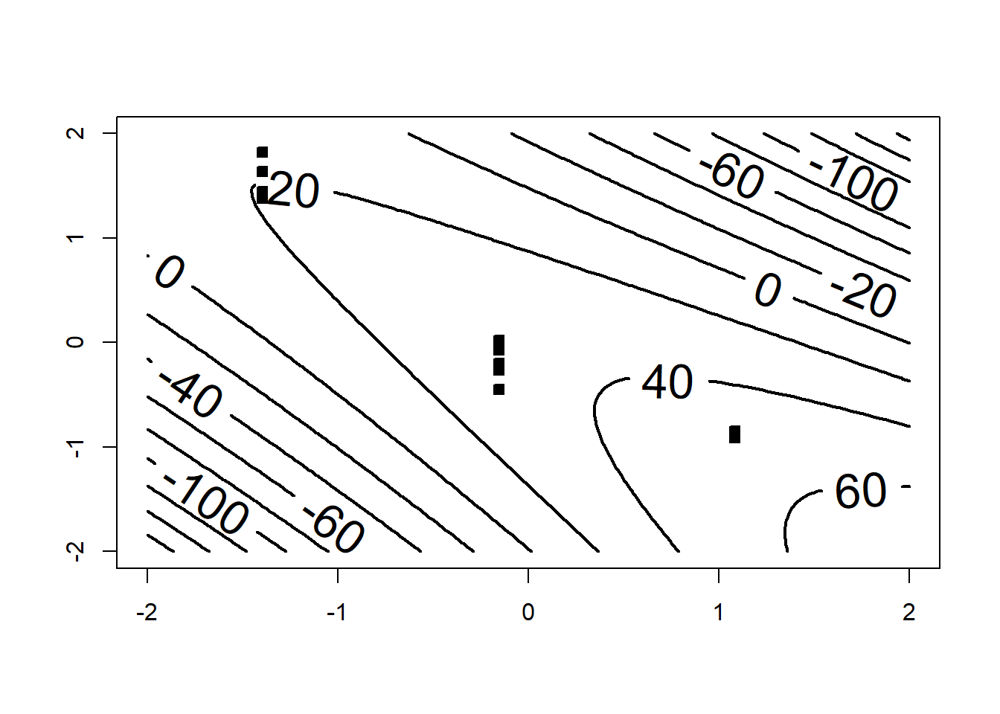

A serious problem that may dramatically impact the usefulness of a regression model is multicollinearity, or near-linear dependence among the regression variables. That is multicollinearity refers to near-linear dependence among the regressors. The regressors are the columns of the \(X\) matrix, so clearly an exact linear dependence among the regressors would result in a singular \(X^\top X\). This will impact our ability to estimate \(\beta\).
To elaborate, assume that the regressor variables and the response have been centered and scaled to unit length. The matrix \(X^\top X\) is then a \(p\times p\) correlation matrix (of the vector of regressors) and \(X^\top Y\) is the vector of correlations between the regressors and response. Recall that a set of vectors \(v_1,\ldots,v_n\) are linearly dependent if there exists \(c\neq 0\) such that \(\sum_{i=1}^nc_iv_i=0\). If the columns of \(X\) are linearly dependent, then \(X^\top X\) is not invertible! We say there is multicollinearity if there exists \(c\) such that \(||c||>k\) and that \(||\sum_{i=1}^p c_ix_i||<\epsilon\) for some small \(\epsilon\) and some large enough \(k\). Here \(x_i\) are the columns of the \(X\) matrix.
Multicollinearity results in large variances and covariances for the least - squares estimators of the regression coefficients. Let \(A=(X^\top X)^{-1}\), where the regressors have been centered and scaled to unit length. That is, columns \(2,\ldots,p\) of \(X\) have their mean subtracted and are divided by their respective norms. Then \[A_{jj}=(1-R^2_j)^{-1},\] where \(R^2_j\) is the coefficient of multiple determination from the regression of \(X_j\) on the remaining \(p - 1\) regressor variables. Now, recall that \({\textrm{Var}}\left[\hat\beta_j\right]=A_{jj}\sigma^2\). What happens when the correlation is approximately 1 between \(X_j\) and another regressor? It is easy to see that the the variance of coefficient \(j\) goes to \(\infty\) as \({\textrm{corr}}\left[X_j,X_i\right]\to 1\).
This huge variance results in large magnitude of the least squares estimators of the regression coefficients. We have that \({\textrm{E}}\left[\left\lVert\hat\beta-\beta\right\rVert^2\right]=\sum_{i=1}^p {\textrm{Var}}\left[\hat\beta_i\right]=\sigma^2 \mathop{\mathrm{trace}}(X^\top X)^{-1}\). Recall! \(\mathop{\mathrm{trace}}(A)\) is the sum of its eigenvalues. If \(X^\top X\) has near linearly dependent columns, then some of the eigenvalues \(\lambda_1,\ldots,\lambda_p\) will be near 0 (why?). Thus, \[{\textrm{E}}\left[\left\lVert\hat\beta-\beta\right\rVert^2\right]=\sigma^2\mathop{\mathrm{trace}}(X^\top X)^{-1}=\sigma^2\sum_{i=1}^p\frac{1}{\lambda_i}.\] We can also show that \[{\textrm{E}}\left[\hat{\beta}^{\top} \hat{\beta}\right]=\beta^{\top} \beta+\sigma^2 \operatorname{Tr}\left(X^{\top} X\right)^{-1},\] which gives the same interpretation.
We can also observe this empirically.
# Let's simulate data from a regression model with highly correlated regressors. simulate_coef=function(){ n=100 X=rnorm(n) X2=2*X+rnorm(n,0,0.01) Y=1+2*X+X2*2+rnorm(n)return(coef(lm(Y~X+X2)))}# See the HUGE variance in the estimated coefficients? 0 this is from MCL!CF=replicate(1000,simulate_coef())hist(CF[1,],xlab='Coef 1')

hist(CF[2,],xlab='Coef 2')

hist(CF[3,],xlab='Coef 3')

It is easy to see from this analysis that multicollinearity is a serious problem, and we should check for it in regression modelling.
8.2 Multicollinearity Diagnostics
8.2.1 VIF
We need some diagnostics to detect multicollinearity. The first of which is the correlation matrix, which is good for detecting pairwise correlations, but not so much for more complicated dependencies! To correct this, a popular diagnostic is the variance inflation factor (VIF): these are the diagonals of \((X^\top X)^{-1}\). A VIF that exceeds 3, 5 or 10 is an indication that the associated regression coefficients are poorly estimated because of multicollinearity. The variance inflation factor can be written as \((1-R^2_j)^{-1}\), where \(R^2_j\) is the coefficient of determination obtained from regressing \(x_j\) on the other regressor variables. For categorical variables, we may look at their VIF together, instead of for the individual dummy variables. This is done via the generalized VIF (GVIF), which was developed by our very own Georges Monette and John Fox (Fox and Monette 1992). We can consider the \((GVIF^{(1/(2\text{number of dummy variables})))}\). However, we want to compare these to the square root of our rules of thumb, so \(\sqrt{3},\sqrt{5},\sqrt{10}\). The values \((GVIF^{(1/(2\text{number of dummy variables})))}\) are computed automatically in R. When your model has interaction effects, or polynomial terms, it is best to exclude those and compute the VIFs. In summary:
Compare the VIF of continuous variables to 3, 5 or 10, above those values signals multicollinearity
Compare the \((GVIF^{(1/(2\text{number of dummy variables})))}\) of categorical variables to \(\sqrt{3},\sqrt{5},\text{ or }\sqrt{10}\), above those values signals multicollinearity
When computing VIF and GVIF, it is best to exclude interaction effects and or polynomial terms
The given thresholds are rules of thumb, and we should not discard evidence of multicollinearity of we are very close to a threshold, e.g., 9.9.
8.2.2 Condition number
One can also look at the eigenvalues of \(X^\top X\), where the regressors are centered and normalized to unit length. If the eigenvalues are small, this indicates multicollinearity. One metric computed from the eigenvalues is the condition number of \(X^\top X\): \(\kappa=\max \lambda_j/\min \lambda_j\), where the regressors are centered and normalized to unit length. Condition numbers between 100 and 1000 imply moderate to strong multicollinearity, and if \(\kappa\) exceeds 1000, severe multicollinearity is indicated. Diagonalizing via \(X^\top X=\Lambda D \Lambda^\top\) yields the eigenvectors, which help us determine the exact dependence between variables is. You can check the eigenvectors associated with the small eigenvalues. Components that are large in the eigenvector indicate that that variable is contributing to the multicollinearity. Again, for this computation, it is best to exclude interaction effects and or polynomial terms.
Note
While the method of least squares will generally produce poor estimates of the individual model parameters when strong multicollinearity is present, this does not necessarily imply that the fitted model is a poor predictor.
If predictions are confined to regions of the \(X\)-space where the multicollinearity holds approximately, the fitted model often produces satisfactory predictions.
The linear combinations \(X\beta\) may be estimated well, even if \(\beta\) is not.
Example 8.1 Recall example Example 6.6. Check for multicollinearity in the proposed models.
I will load in the data below:
####### Analyzing the data via EDA ##############names(df_clean2)
# Convert to factorsdf_clean2$District=as.factor(df_clean2$District)df_clean2$Extwall=as.factor(df_clean2$Extwall)df_clean2$Stories=as.factor(df_clean2$Stories)df_clean2$Fbath=as.factor(df_clean2$Fbath)df_clean2$Bdrms=as.factor(df_clean2$Bdrms)df_clean2$Units=as.factor(df_clean2$Units)# df_clean2=df_clean2[,c('Sale_price','Fin_sqft',# 'District','Sale_date','Year_Built','Lotsize')]# We are not going to remove the outliers that we found earlier , and see if these diagnostics detect it# remove those with 0 lot sizedf3=df_clean2[df_clean2$Lotsize>0,]df4=df3[df3$Lotsize<150000,]df5=df_clean2[df_clean2$District!=3,]df5$District=droplevels(df5$District)df=df5# Old model# model2=lm(sqrt(Sale_price)~Fin_sqft+District+Sale_date+ Year_Built,data=df5)# summary(model2)# More variables, which might be relatedmodel2=lm(sqrt(Sale_price)~Fin_sqft+District+Sale_date+ Year_Built+Units+Bdrms+Fbath+Extwall,data=df5)s=summary(model2)s
Example 8.2 Example 9.1 from the textbook - The Acetylene Data. Below presents data concerning the percentage of conversion of \(n\) - heptane to acetylene and three explanatory variables. These are typical chemical process data for which a full quadratic response surface in all three regressors is often considered to be an appropriate tentative model. Let’s build the model and see how the extrapolation performs.
# For standardizing via Z scoresunit_norm=function(x){ x=x-mean(x)return(sqrt(length(x)-1)*x/sqrt(sum(x^2)))}df2=df#standardizing the regressorsdf2[,2:4]=apply(df[,2:4],2,unit_norm)df2=data.frame(df2)corrplot::corrplot(cor(df2))

# Observe the high correlations between Contact time and Reactor temperatureplot(df2$Reactor_Temperature_deg_C,df2$Contact_Time_sec,pch=22,bg=1)
Call:
lm(formula = P ~ t + H + C + t * H + t * C + C * H + t2 + H2 +
C2, data = df2)
Residuals:
Min 1Q Median 3Q Max
-1.3499 -0.3411 0.1297 0.5011 0.6720
Coefficients:
Estimate Std. Error t value Pr(>|t|)
(Intercept) 35.8958 1.0916 32.884 5.26e-08 ***
t 4.0038 4.5087 0.888 0.408719
H 2.7783 0.3071 9.048 0.000102 ***
C -8.0423 6.0707 -1.325 0.233461
t2 -12.5236 12.3238 -1.016 0.348741
H2 -0.9727 0.3746 -2.597 0.040844 *
C2 -11.5932 7.7063 -1.504 0.183182
t:H -6.4568 1.4660 -4.404 0.004547 **
t:C -26.9804 21.0213 -1.283 0.246663
H:C -3.7681 1.6553 -2.276 0.063116 .
---
Signif. codes: 0 '***' 0.001 '**' 0.01 '*' 0.05 '.' 0.1 ' ' 1
Residual standard error: 0.9014 on 6 degrees of freedom
Multiple R-squared: 0.9977, Adjusted R-squared: 0.9943
F-statistic: 289.7 on 9 and 6 DF, p-value: 3.225e-07
# Crazy high VIFcar::vif(RS)
there are higher-order terms (interactions) in this model
consider setting type = 'predictor'; see ?vif
t H C t2 H2 C2
375.247759 1.740631 680.280039 1762.575365 3.164318 1156.766284
t:H t:C H:C
31.037059 6563.345193 35.611286
car::vif(RS,type='predictor')
GVIFs computed for predictors
GVIF Df GVIF^(1/(2*Df)) Interacts With Other Predictors
t 51654.740516 6 2.470354 H, C t2, H2, C2
H 51654.740516 6 2.470354 t, C t2, H2, C2
C 51654.740516 6 2.470354 t, H t2, H2, C2
t2 1762.575365 1 41.983037 -- t, H, C, H2, C2
H2 3.164318 1 1.778853 -- t, H, C, t2, C2
C2 1156.766284 1 34.011267 -- t, H, C, t2, H2
# hidden extrapolation - be careful# Create a grid to extrapolate overc_grid=seq(-2,2,l=100)t_grid=seq(-2,2,l=100)g=expand.grid(t_grid,c_grid)# Adding a fixed value of H=-0.6082179g=cbind(g,rep(-0.6082179,nrow(g)))# Adding H^2g=cbind(g,g^2)# Making new dataframe for predictionsnew_dat=data.frame(g)names(new_dat)=c("t","C","H","t2","C2","H2")# Predicting the values on the gridZ=predict.lm(RS,new_dat)contour(c_grid,t_grid,matrix(Z, ncol =length(t_grid)),lwd=2,labcex=2,ylim=c(-1,1)*2,xlim=c(-1,1)*2)points(df2$t,df2$C,pch=22,bg=1)

## Notice that as soon as we leave the region with data, the response becomes negative. # Recall that it is a percentage and can't be negative## This shows that mild extrapolation dangerous!
Example 8.3 Use the NFL data from the textbook - regress the number of wins against all variables. Check for multicollinearity. Propose a method to resolve the multicollinearity.
####################################################### ## NFL DATA EXAMPLE# ######################################################df=MPV::table.b1# Notedf
y x1 x2 x3 x4
Min. : 0.000 Min. :1416 Min. :1414 Min. :35.10 Min. :38.10
1st Qu.: 4.000 1st Qu.:1896 1st Qu.:1714 1st Qu.:37.38 1st Qu.:52.42
Median : 6.500 Median :2111 Median :2106 Median :38.85 Median :57.70
Mean : 6.964 Mean :2110 Mean :2127 Mean :38.64 Mean :59.40
3rd Qu.:10.000 3rd Qu.:2303 3rd Qu.:2474 3rd Qu.:39.70 3rd Qu.:68.80
Max. :13.000 Max. :2971 Max. :2929 Max. :42.30 Max. :78.30
x5 x6 x7 x8
Min. :-22.00 Min. : 576.0 Min. :43.80 Min. :1457
1st Qu.: -5.75 1st Qu.: 710.5 1st Qu.:54.77 1st Qu.:1848
Median : 1.00 Median : 787.5 Median :58.65 Median :2050
Mean : 0.00 Mean : 789.9 Mean :58.16 Mean :2110
3rd Qu.: 6.25 3rd Qu.: 869.8 3rd Qu.:61.10 3rd Qu.:2320
Max. : 19.00 Max. :1037.0 Max. :67.50 Max. :2876
x9
Min. :1575
1st Qu.:1913
Median :2101
Mean :2128
3rd Qu.:2328
Max. :2670
Wins RushY PassY PuntA FGP
Min. : 0.000 Min. :1416 Min. :1414 Min. :35.10 Min. :38.10
1st Qu.: 4.000 1st Qu.:1896 1st Qu.:1714 1st Qu.:37.38 1st Qu.:52.42
Median : 6.500 Median :2111 Median :2106 Median :38.85 Median :57.70
Mean : 6.964 Mean :2110 Mean :2127 Mean :38.64 Mean :59.40
3rd Qu.:10.000 3rd Qu.:2303 3rd Qu.:2474 3rd Qu.:39.70 3rd Qu.:68.80
Max. :13.000 Max. :2971 Max. :2929 Max. :42.30 Max. :78.30
TurnD PenY PerR ORY
Min. :-22.00 Min. : 576.0 Min. :43.80 Min. :1457
1st Qu.: -5.75 1st Qu.: 710.5 1st Qu.:54.77 1st Qu.:1848
Median : 1.00 Median : 787.5 Median :58.65 Median :2050
Mean : 0.00 Mean : 789.9 Mean :58.16 Mean :2110
3rd Qu.: 6.25 3rd Qu.: 869.8 3rd Qu.:61.10 3rd Qu.:2320
Max. : 19.00 Max. :1037.0 Max. :67.50 Max. :2876
OPY
Min. :1575
1st Qu.:1913
Median :2101
Mean :2128
3rd Qu.:2328
Max. :2670
# What should we do?# Try dropping one or create a new variable# New variable# we can try rushing yards adjusted by the percentage of rushing plays # This would be yards per percentage rushing,df$RushPP=df$RushY/df$PerR# paste(names(df),collapse='+')model=lm(Wins~PassY+PuntA+FGP+TurnD+PenY+OPY+RushPP,data=df)summary(model)
There are four primary sources/causes of multicollinearity :
The data collection method employed: In this case, some of the variables are typically confounded and/or the experiment/study was not well-designed.
Constraints on the model or in the population: Sometimes, only certain combinations of levels of variables can be observed together.
Model specification: Sometimes you have two or more variables in your model that are measuring the same thing.
An overdefined model: You have too many variables in your model.
Make sure to check for each of these. Sometimes, regression coefficients have the wrong sign. This is likely due to one of the following:
The range of some of the regressors is too small – if the range of some of the regressors is too small, then the variance of \(\hat\beta\) is high.
Important regressors have not been included in the model.
Multicollinearity is present.
Computational errors have been made.
Multicollinearity can be cured with:
more data (lol often not possible),
model re-specification: Can you include a function of the variables that preserves the information, but aren’t linearly dependent? Can you remove a variable?
Or, a modified version of regression, one of Lasso, ridge or elastic net regression.
8.3 Homework questions
Complete the Chapter 9 textbook questions.
Exercise 8.1 Check for multicollinearity in all of our past examples.
Exercise 8.2 Summarize the 3 multicollinearity diagnostics.
Fox, John, and Georges Monette. 1992. “Generalized Collinearity Diagnostics.”Journal of the American Statistical Association 87 (417): 178–83. https://doi.org/10.1080/01621459.1992.10475190.